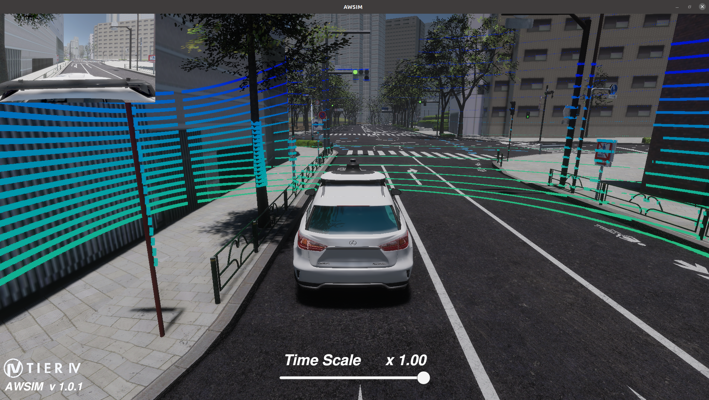

AIチャレンジ2023インテグレーション大会 予選
Introduction
昨年度行った、自動運転AIチャレンジ2022シミュレーション大会と同様に、自動運転AIチャレンジ2023インテグレーション大会の予選大会では自動運転ソフトウェアAutoware.universeと自動運転シミュレータAWSIMを使用します。Setupページ記載の手順に沿って環境を構築し、大会へご参加ください。
About Competition
皆様には下記の流れに沿って、本大会に取り組んでいただきます。
- 与えられたシナリオをクリアできるようなソフトウェアをAutoware.universeをベースに開発
- ローカル環境で手順1で作成したソフトウェアを検証
- 検証が完了したソフトウェアをオンライン環境にアップロード
- オンライン上でシミュレーションが実施され、タイムを計測
※最後にアップロードされたソースコードのシミュレーション結果のタイムに基づいて順位を決定します。 （オンライン環境へのご案内は後日行います）
About Autoware
AutowareとはROS2を使用したオープンソースの自動運転ソフトウェアです。LiDARやカメラなどからデータを取得するセンシング機能、センシングデータを組み合わせて車両の位置を推定するLocalization機能などがモジュールとして存在し、それらが相互に連携することで、自動運転を実現しています。本ソフトウェアは日本国内の公道での走行実験の実績もあります。
本大会ではAutowareの中でも研究・開発向けディストリビューションであるAutoware.universeを使用します。その他のディストリビューションやAutowareのこれまでの開発の流れについては、こちらを御覧ください。
About AWSIM
AWSIMはUnity上で動作するオープンソースの自動運転用シミュレータになります。ROS2 nativeに対応していること、WindowsやUbuntuに対応していることから、誰でも簡単に自動運転アルゴリズムのシミュレーションを行うことが可能です。 AutowareでAWSIMを活用した場合、AutowareのノードがAWSIMからセンシングデータをSubscribeし、受け取ったデータを各モジュールで処理を行い、その結果（車両制御情報）をAWSIMにPublishすることで、AWSIM上の車両を制御します。詳細はこちらをご確認ください。 
Related Documentations
Page Links
- Introduction 予選大会について
- Setup 環境構築手順について
- Rule 大会ルールについて
- LocalEnvrionment ローカル環境について
- OnlineEnvrionment オンライン環境について
- Other 問い合わせ方法などについて